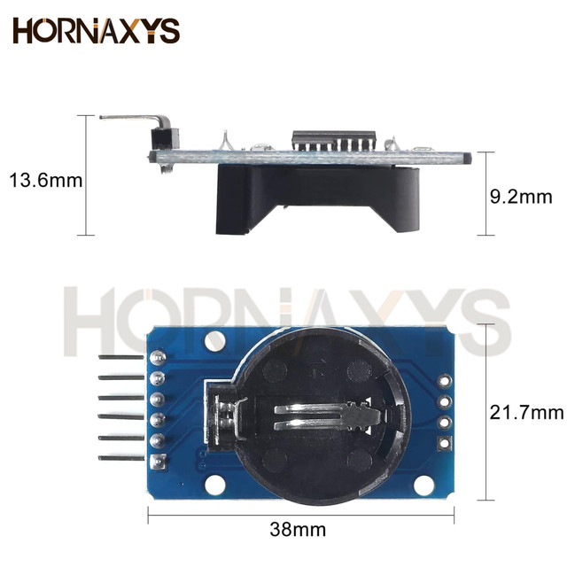
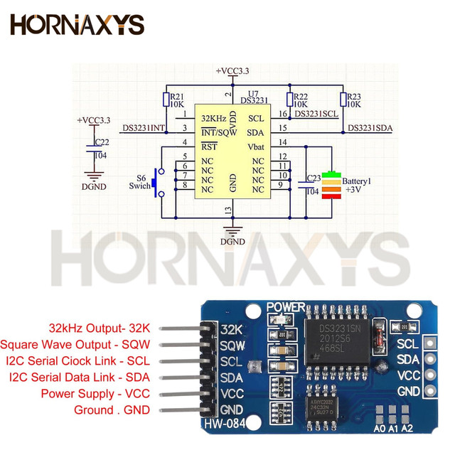
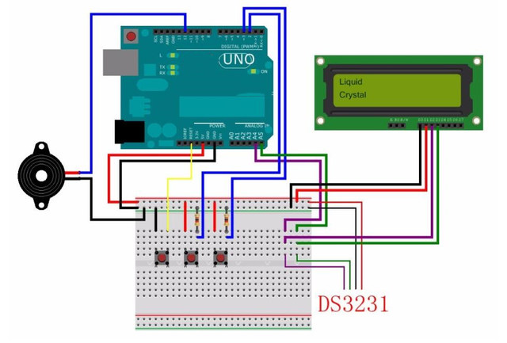
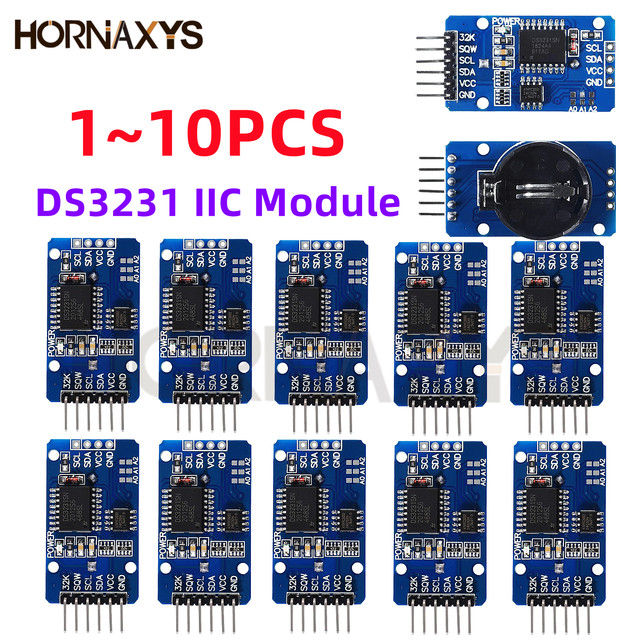
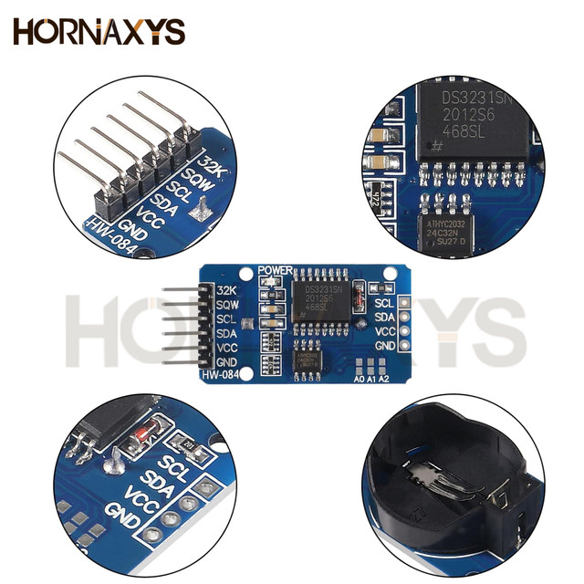
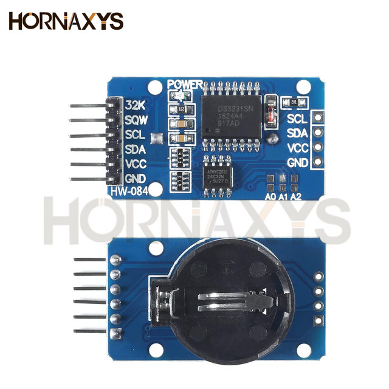

DS3231 module
DS3231 is a low-cost, extremely accurate I2C real-time clock (RTC), with an integrated temperature-compensated crystal oscillator (TCXO) and crystal. The device incorporates a battery input, disconnect the main power supply and maintains accurate timekeeping. Integrated oscillator improve long-term accuracy of the device and reduces the number of components of the production line. The DS3231 is available in commercial and industrial temperature ranges, using a 16-pin 300mil SO package.
RTC maintains seconds, minutes, hours, day, date, month, and year information. Less than 31 days of the month, the end date will be automatically adjusted, including corrections for leap year. The clock operates in either the 24 hours or band / AM / PM indication of the 12-hour format. Provides two configurable alarm clock and a calendar can be set to a square wave output. Address and data are transferred serially through an I2C bidirectional bus.
A precision temperature-compensated voltage reference and comparator circuit monitors the status of VCC to detect power failures, provide a reset output, and if necessary, automatically switch to the backup power supply. In addition, / RST pin is monitored as generating μP reset manually.
Save time and high precision addition, DS3231 also has some other features that extend the system host of additional features and a range of options. The device integrates a very precise digital temperature sensor, through the I2C * interface to access it (as the same time). This temperature sensor accuracy is ± 3 ° C. On-chip power supply control circuit can automatically detect and manage the main and standby power (i.e., low-voltage battery) to switch between the power supply. If the main power failure, the device can continue to provide accurate timing and temperature, performance is not affected. When the main power re-power or voltage value returns to within the allowable range, the on-chip reset function can be used to restart the system microprocessor.
Module parameters:
1 Size: 38mm (length) * 22mm (W) * 14mm (height)
2 Weight: 8g
3 Operating voltage :3.3 - 5 .5 V
4 clock chip: high-precision clock chip DS3231
5 Clock Accuracy :0-40 ° range, the accuracy 2ppm, the error was about 1 minute
6 calendar alarm clock with two
7 programmable square-wave output
8 Real time clock generator seconds, minutes, hours, day, date, month and year timing and provide valid until the year 2100 leap year compensation
9 chip temperature sensor comes with an accuracy of ± 3 °
10 memory chips: AT24C32 (storage capacity 32K)
11.IIC bus interface, the maximum transmission speed of 400KHz (working voltage of 5V)
12 can be cascaded with other IIC device, 24C32 addresses can be shorted A0/A1/A2 modify default address is 0x57
13 with rechargeable battery LIR2032, to ensure the system after power failure, the clock move any natural normal
14 Packing: single anti-static packaging
Wiring instructions (for Arduino uno r3 for example):
SCL → A5
SDA → A4
VCC → 5V
GND → GND
Shipping list:
1.DS3231 module a (tested good antistatic packaging )
Note: don't inclue battery,it only need 0.01 dollars,it's not safty to ship by air mail.hope you can understanding
(2) an electronic file data (including test procedures for Arduino, PDF format schematics, data sheet)





